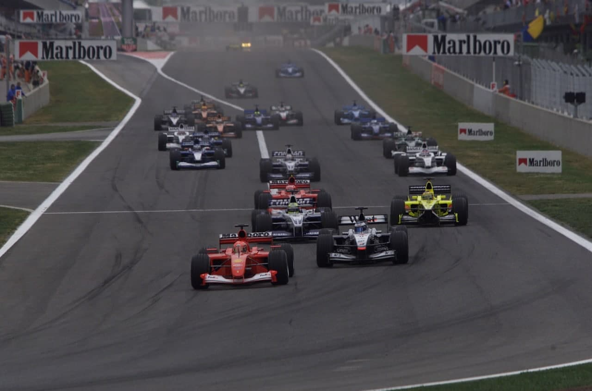
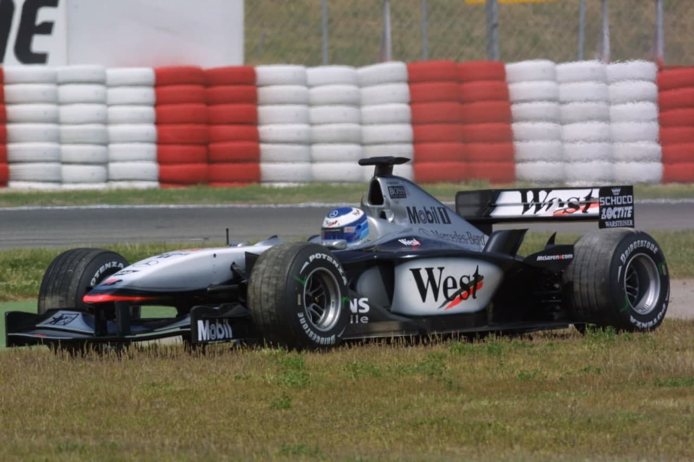
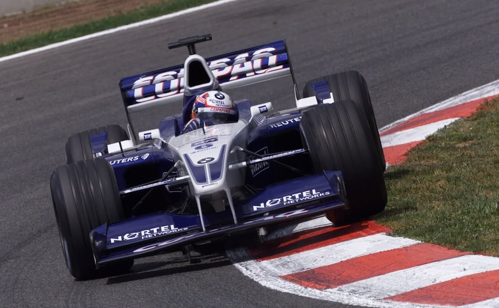
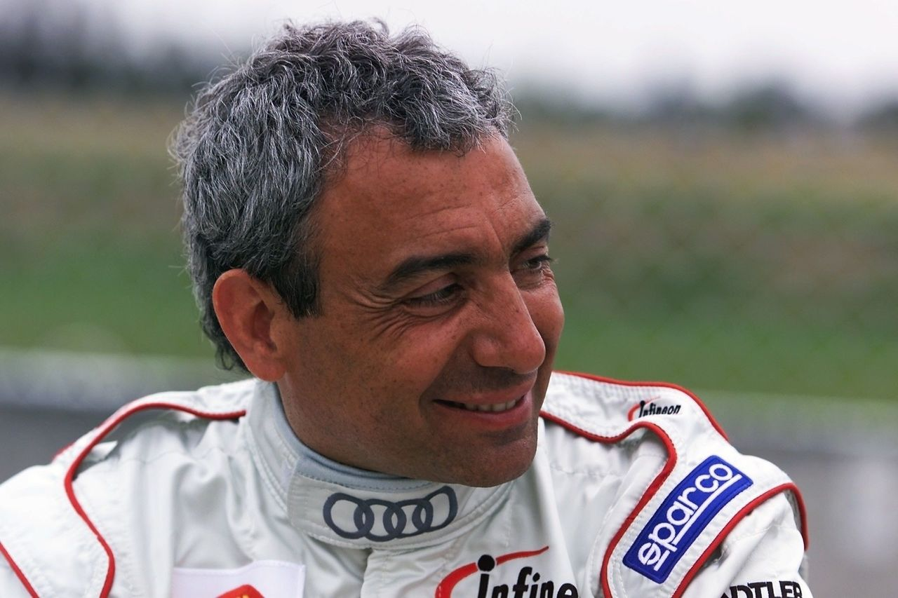
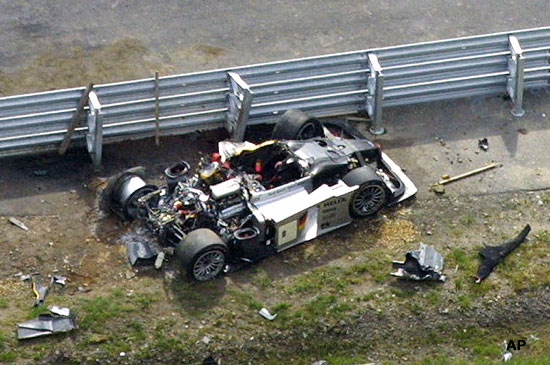

TUDO DA CERTO PARA ESTE ALEMÃO

Michael Schumacher herda vitória na última volta e reassume a posição de líder isolado do campeonato.
POR AMERICO TEIXEIRA JR.
Ao vencer a quinta etapa do Mundial de Pilotos e Construtores de Fórmula 1, em Barcelona, o alemão Michael Schumacher ampliou ainda mais a sua condição de líder do campeonato, agora com 36 pontos, distanciando-se de David Coulthard, o escocês do McLaren MP4-16 Mercedes, que chegou ao circuito da Catalunya empatado na liderança com o piloto da Ferrari. Mas apesar do tricampeão firmar-se a cada prova como o principal favorito ao título, a vitória nesta 31ª edição do Grande Prêmio da Espanha foi surpreendente e inesperada em razão das circunstâncias verificadas em suas 65 voltas. Faltando apenas uma volta para o término da prova, Schumacher já se conformava com o 2º posto e lutava para cruzar a linha de chegada com a Ferrari F2001 em péssimas condições de dirigibilidade. Mesmo tendo feito a pole position e liderado a maior parte da prova, seu carro visivelmente perdeu rendimento após o segundo pit stop, resultado de problemas no jogo de pneus e de forte vibração no carro. Enquanto isso, Mika Hâkkinen partia com o objetivo de conseguir sua primeira vitória na temporada e espantar de vez a sua fraca participação nas quatro primeiras provas do campeonato. Mas o dia era mesmo de Michael Schumacher e, faltando menos de uma volta para a bandeirada de chegada, o motor Mercedes do McLaren de Mika Hakkinen estourou e ele acabou jogando no colo de Schumacher a 47ª vitória do piloto alemão. Ron Dennis, o chefão da McLaren, afirmou que se tratou de uma falha hidráulica, que foi ocasionando vários tipos de problemas simultâneos, inclusive de embreagem, mas ficou visível que foi mesmo o motor Mercedes V10 que jogou por terra todo o trabalho do bicampeão finlandês. Esse acabou se constituindo no único elemento de emoção de uma prova marcada pela ausência de disputas pelas primeiras posições. Apesar disso, vários outros elementos fizeram da corrida espanhola especial. Além do inesperado desfecho, foi também marcada pelo primeiro pódio de Juan Pablo Montoya na Fórmula 1, o colombiano que que chegou em 2º lugar com o Williams F23 BMW, e do retorno do canadense Jacques Villeneuve ao pódio — e o primeiro da equipe BAR. Foi também o resultado que elevou Villeneuve a 201 pontos em sua carreira de 86 Grandes Prêmios.

Mas o principal atrativo do Grande Prêmio da Espanha foi a volta do controle de tração, banido da Fórmula 1 desde 1994, para tentar diminuir as disparidades técnicas entre as equipes, e aceito novamente a partir desta prova pela Federação Internacional de Automobilismo por absoluta falta de condições da entidade em fiscalizar os dispositivos eletrônicos embarcados nos atuais bólidos. Pelo menos nessa primeira prova, não houve uma mudança no equilíbrio de forças da categoria que pudesse ser creditada à volta do controle de tração. Em termos gerais, algumas equipes não utilizaram o dispositivo, alegando a falta de testes que dessem confiabilidade ao conjunto eletrônico e outras só utilizaram o sistema na largada. E a Minardi, que havia decidido não correr com o sistema, acabou optando por ele pouco antes da largada diante da ameaça de chuva, que acabou não acontecendo.

Na volta de apresentação, David Coulthard não partiu por falha no sistema eletrônico de seu carro. Quando
o fez, todo o pelotão já havia partido e restou-lhe, então, preparar-se para uma corrida de recuperação
saindo no final do grid. Na largada, Schumacher manteve a ponta, seguido por Mika Hakkinen, Rubens
Barrichello e Ralf Schumacher. Ainda
antes da primeira curva, Ralf Schumacher tentou ganhar a posição de Barrichello a força, tocando roda
com o brasileiro em plena reta. Mas Barrichello não se intimidou com a manobra arriscada e manteve o pé
embaixo, deixando o alemão da Williams para trás. As coisas continuavam a não caminhar como o previsto
para David Coulthard. O escocês foi para os boxes no complemento da primeira volta, para a troca do bico
do McLaren, danificado na largada. E quem ficou com as sobras foi Enrique Bernoldi, o piloto da Arrows
que acabou acertado em cheio pelos pedaços do spoiler dianteiro do McLaren. Oito voltas depois — antes,
também foi obrigado a parar para substituir o bico do Arrows Asiatech —, Bernoldi abandonou a prova com
pane no sistema de alimentação. O brasileiro foi o terceiro a sair, uma vez que na 5ª volta um choque
entre Heinz-Harald Frantzen (Jordan Honda) e o estreante na equipe Jaguar, o espanhol Pedro De La Rosa
acabou com a prova para os dois.

Depois de enfrentar a violência de Ralf Schumacher na largada, Rubens Barrichello seguia em outra corrida marcada pela eficiência e só deixou de marcar pontos, pela quarta vez no campeonato — inclusive com amplas possibilidades de pódio —, por quebra da Ferrari. Faltando somente 17 voltas para o término da prova em Barcelona, Barrichello foi para os boxes achando que tivesse havido um furo no pneu traseiro esquerdo. No seu retorno para a pista, contatou que, na verdade, o problema estava na suspensão traseira, que o obrigou a parar nos boxes, em definitivo, já na passagem seguinte. Outra boa participação brasileira foi protagonizada por Luciano Burti. Em sua estréia na equipe de Alain Prost e Pedro Paulo Diniz, o piloto paulista não apenas novamente conseguiu terminar uma prova do Mundial de Fórmula 1, desta vez em 11º — e uma posição apenas de desvantagem para o seu novo companheiro de equipe, o francês Jean Alesi —, como também deixou a sua antiga equipe, a Jaguar, bem para trás. Já Tarso Marques, novamente às voltas com as deficiências de seu equipamento, torcia para que chovesse. Só assim a enorme diferença de desempenho entre o seu European Minardi e os outros carros poderia ser, pelo menos, minimizada. Como a chuva não caiu, restaram os méritos para o paranaense que, mais uma vez, conseguiu chegar ao final de um Grande Prêmio de Fórmula 1, dessa vez em 16º e último.

NOVA FASE NA FORMULA 1
O Grande Prêmio da Espanha de Fórmula 1 deste ano iniciou uma nova fase da categoria. Depois de mais de sete anos, alguns controles eletrônicos voltaram a ser permitidos nos carros. Dentre os principais aparatos que a partir desta corrida já estavam presentes nos carros, o principal é, sem dúvida, o controle de tração. Este componente ajuda o motor a usar de maneira mais eficiente a sua potência, gerenciando-a de modo a distribuí-la para as quatro rodas do carro. Caso alguma delas receba uma dose exagerada de força, que possa fazê-la “patinar”, um comando eletrônico tira um pouco da potência dirigida a ela, até que recupere a aderência (e, conseqüentemente, a tração). Michael Schumacher mesmo disse que esse dispositivo evita perder tempo, mas aquele piloto que conseguir evitar utilizar o recurso, fará um contorno de curva mais rápido. Ou seja, a diferença ainda será dada pelo piloto. Já no comando automático do câmbio, não significa que o piloto não mais realizará as trocas de marchas. O câmbio funciona como um sistema usado em carros de passeio atualmente, que realiza a troca de maneira automática ou manual. Uma programação é feita para cada circuito, indicando qual a melhor hora de trocar as marchas em cada trecho. A eletrônica entra em ação para permitir que o máximo de torque seja explorado do motor, através do uso da rotação ideal, realizando as trocas de maneira precisa, sem desgaste excessivo e sem perder tempo (não é mais necessário o acionamento da embreagem). Isso vai evitar que aconteça erro na troca de marchas. Se o piloto sentir que, por algum motivo, a performance pode ser melhorada, em um determinado trecho, sem o auxílio eletrônico, a troca de marchas (que continua sendo feita através de uma “borboleta” localizada atrás do volante) pode ser realizada manualmente, sem problemas.
As primeiras reações dos pilotos quanto aos controles eletrônicos não foram de surpresa. A maioria admitiu que eles vão ajudar a evitar erros. Na hora da largada e da saída dos pit stops, argumentam, a precisão de bom desempenho será garantida. Mas cada carro e sistema reagirá de uma forma diferente, dependendo do estilo de pilotagem. Juan Pablo Montoya definiu como “complicado” o incremento destes novos itens. Ao mesmo tempo em que se ganha em performance, existe o aumento de complexidade para cuidar destes aparatos e o acerto ideal depende de pequenas afinações. Outro piloto da categoria, Olivier Panis, disse que um longo caminho ainda tem que ser percorrido para que exista uma menor diferença entre as equipes. Somente a implantação dos sistemas não será suficiente para equiparar os times. O importante é que a eletrônica é favoravel a todos pelo menos em um ponto: o aumento da segurança. Na Catalunya, algumas equipes utilizaram apenas o controle de largada, o que faz prever novos avanços nessa área já nos próximos Grandes Prêmios.
MORRE ALBORETO

Um acidente com um Audi R8 em testes para as 24 Horas de Le Mans tirou a vida do piloto Italiano
POR Venício Zambeli
O ex-piloto da Ferrari de Fórmula 1, o italiano Michele Alboreto, de 44 anos, morreu dia 25 de abril de 2001 quando realizava testes para as 24 Horas de Le Mans. O acidente aconteceu no circuito de Lausitzring, na Alemanha, quando Alboreto pilotava um modelo Audi R8, onde era um dos pilotos oficiais da marca alemã desde 1999. Em uma curva do circuito misto de Lausitzring, seu carro saiu da pista, ainda por motivos desconhecidos, rodou e capotou várias vezes até parar depois de um guard rail. A equipe médica chegou ao local quase dois minutos depois e um helicóptero levou o piloto para um hospital próximo, logo após. Mas nada mais poderia ser feito para salvar a vida de Alboreto. Sua morte foi provocada por várias lesões na cabeça e no pescoço. A Audi vinha se preparando para defender a vitória obtida nas 24 Horas de Le Mans do ano passado. A edicão deste ano será realizada em 16 e 17 de junho próximos. Com esse objetivo, um intenso programa de testes já estava sendo executado desde janeiro pela equipe Audi Mo-torsport e o piloto italiano vinha trabalhando no desenvolvimento do modelo, além de participar das corridas do American Le Mans Series, também com o mesmo carro da equipe Audi.

O presidente da Audi Sport, Wolfgang Ullrich, disse que o acontecido foi uma tragédia incompreensível. Segundo ele, o veículo envolvido no acidente tinha completado mais de 100 000 quilômetros de testes, nos mais variados circuitos, sem apresentar nenhum problema. Mesmo assim, Ullrich afirmou que tudo será feito para descobrir as razões que provocaram o terrível acidente. Alboreto morava em Mônaco, era casado com Nadia e tinha dois filhos. Começou sua carreira automobilística em 1977, na Itália, competindo na categoria Fórmula Monza. Em 1980, foi campeão europeu de Fórmula 3 e, no ano seguinte, fez sua estréia na Fórmula 1, mais precisamente no Grande Prêmio de San Marino, com um Tyrrell Ford. Mas a sua melhor fase na categoria aconteceu em 1985, quando terminou com o vice-campeonato no Mundial de Pilotos, dirigindo pela Ferrari, com 53 pontos, atrás de Alain Prost, com McLaren (73 pontos). Depois de deixar em 1994 a Fórmula 1, Alboreto dedicou-se às corridas de longa duração, onde mostrou todo o seu talento como piloto. Venceu em 1997 as 24 Horas de Le Mans e, este ano, as 12 Horas de Sebring.